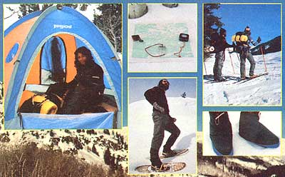

"You can pay a lot of money for camping gear," says John F. Barber of Yellowstone National Park, Wyoming. "Or you can get good equipment for next to nothing. It all depends on whether you know what to look for and where to look for it."
Like other outdoor sports, backpacking can be either expensive or inexpensive. You can cook your meals over a five-pound, $34 Optimus stove . . . or you can heat your eats over an open campfire. Likewise, you can tromp through the snow wearing $65 Tubb snowshoes . . . just as easily as you can do your tromping in a set of no-cost "made 'em yourself" snowshoes. That's the beauty of backpacking: You don't have to be "well heeled" to do it . . . and do it right.
By the same token, there's no excuse for not choosing the right kind of equipment for the task at hand. Of course, if you've never shopped for backpacking gear before-or if it's been a long time (ten years, say) since you have-you may not know (or remember) what the "right kind" of equipment is . . . in which case the following gear gathering tips and hints are in order.
A pair of sturdy, rock-resistant hiking boots should be considered essential. Look for mediumweight (three to five pounds), Vibram-soled boots with reinforced heels and toes and protective padding around the ankles. (Ideally, the boots should have padded tongues also.) Check the construction carefully. The fewer the seams, the less chance that water will leak through to your feet. Full-grain leather and Norwegian welts (ask the salesperson) are indicators of quality in any boot.
When you shop for footgear, wear the type of socks you expect to be wearing while hiking. (Generally, this means two socks-one light, one heavy-on each foot.) Also-if possible-try boots on late In the day, when your feet are hot and swollen (thus simulating hiking conditions).
As you put the boots on, slide your feet as far forward in them as possible . . . then see if you can fit one finger down behind your heel. If you can touch the bottom of the boot with one finger, you should have the right length. (Two fingers means the boot is too big.)
OK. Now lace the leathers up snugly (but not tightly) and go climb some stairs or do a few deep knee bends. There should be very little up-and-down play of the heel as you walk, and when you step down an incline your toes should not ram into the front of the boot. The ultimate test is to walk up to a wall and kick it. If you don't end up on the floor writhing in pain, you've probably got yourself a good fitting, solid pair of hiking boots.
Once you've taken your new footgear home, break it in gradually (remember, you're breaking in your feet as well as the boots). Waterproof the uppers (with a silicone spray made for the purpose) between outings. And store the boots in a warm, dry place . . . never dry them in front of a fire.
For one-day (and shorter) hikes, a frameless pack is best however, for longer treks you should have a pack that's mounted on a metal frame. Regardless Of what type pack you select, be sure to find out- before you buy-whether it's comfortable or not. The best way to do this, of course, is to load the carrier with 50 or 60 pounds of gear right in the store, if necessary-and put it on.
Hoisting a loaded pack onto your back involves a certain amount of skill and technique (you'll get it with practice). Basically, what you do is: First, balance the pack on your toe (this is where that reinforced toe comes in handy!). Then spread your feet for balance, bend your knees, take a deep breath, and-grabbing the pack's shoulder straps-heave the pack up onto your raised thigh. Now slip an arm through one of the shoulder straps. (Make sure the straps aren't twisted.) Transfer the weight to your back and slip your other arm through the other strap.
Before going any further, secure the waist strap tightly around your waist and make adjustments between the waist strap and shoulder straps so that a good portion of the loaded pack's weight rests squarely on your hips. Also at this point, check to see that the pack's center of gravity is high and forward (you'll feel a little bit like Neil Armstrong walking on the moon). Make sure the frame fits you . . . it should curve along your spine and angle at the shoulders and waist to fit your contours.
Now walk around the block. Your pulse should quicken . . . but otherwise you should feel no pain. Let your comfort be your guide, and if the pack fits . . . wear it (all the way home).
The most critical element of any sleeping bag-as you might well guess-is the filling. Here, you'll have to choose between goose down (traditionally the Rolls-Royce of sleeping bag fillers) and one of the new synthetic stuffings, such as polyester fiberfill or Polarguard.
For light weight, warmth, and compactness, goose down has no equal. (The synthetic fills just won't pack down as small and-pound for pound-don't offer the warmth of goose down.) Down, however, is expensive . . . and when it gets wet, it offers no insulation or warmth whatsoever. The synthetics-on the other hand-provide good warmth even when they're saturated with water.
Bear in mind, too-when you go to select a bag-that loft (the thickness of the sleeping bag after you've fluffed it up) is an important comfort consideration: The higher the loft, the more warmth.
Style and color are matters of personal taste more than anything else. (A mummy bag with a hood is the warmest design . . . but if that's too confining for you, you can try a semi-rectangular model.) As long as the outer construction of your sleeping bag is of tightly woven, water-repellent nylon-and the filling (whatever it is) is spread evenly throughout the bag by a series of baffles-you're all set.
A small tent is the hiker's best form of protection against the elements, although in many cases a rain fly, tube tent, poncho, or a large sheet of plastic pitched as a lean-to will do just as well. When shopping for tents, keep the following rules in mind: [1] Choose the model that affords the most protection for the least amount of weight (five pounds for a two-person tent is plenty). [2] Look for double-layer nylon construction. [3] Select a tent that comes with a waterproof floor, storm door/flaps, and mosquito netting over all openings. [4] Above all, choose a tent that you can set up easily on a dark, stormy night!
Many outdoor shops rent backpacks, tents, sleeping bags, etc. Oftentimes, you can rent everything you need for a weekend outing for S10 or S12 under a "package price" deal. I strongly recommend that you take the rental route first. This way, you'll be able to try out the equipment-no strings attached-under actual hiking conditions and find out for sure whether you like the gear before committing yourself to a purchase.
Also remember that you don't have to buy your gear new, if you don't want to. Just about any thrift shop or secondhand store will have some camping equipment (boots, tents, and sleeping bags, at least). But be careful if you decide to purchase "previously owned" items. Check fabric items for tears, examine metal frames for cracks, and look for broken seams (and/or worn-through mid-soles) on boots. And be especially sure to check sleeping bags for rips, broken zippers, and mildew.
If you happen to live near a backpacking equipment manufacturer, look (in the phone book) to see if they have a "factory outlet store'. Oftentimes you can buy slightly flawed-but entirely serviceable-equipment at considerable savings through such stores.
Another good way to get almost-new equipment for less-than-new prices is to check with outdoor shops for information on end-of-the-year sales of rental equipment. (You might also go around to the summer camps in your area to see if they're interested in selling-or bartering-any used gear.)
Then too, you may well want to make your own backpacking equipment. Kim Zarney's article in MOTHER NO. 15 (pages 68-73) will get you started.
Have fun shopping . . . and happy trails!
The equipment depicted in this feature can be obtained by mail from L.L. Bean, 511 Casco, Freeport, Maine 04032; Camp 7, 802 S. Sherman, Longmont, Colo. 80501; Co-op Wilderness Supply, 1432 University Ave., Berkeley, Calif. 94703; Eastern Mountain Sports, 1041 Commonwealth Ave., Boston, Mass. 02215; Eddie Bauer, P.O. Box 3700, Seattle. Wash. 98124, Gerry, 5450 N Valley Hwy., Denver, Colo. 80216; Holubar Mountaineering Ltd., P.O. Box 7. Boulder, Colo. 80302; Jansport Co., Paine Field Industrial Park, Everett, Wash. 98204, Kelty Pack, Inc., P.O. Box 639, Sun Valley, Calif. 91352; Recreation Equipment, Inc., P.O. Box 22088. Seattle, Wash. 98122; Sierra Designs, Fourth and Addison Streets. Berkeley, Calif. 94710: and The Ski Hut, 1615 University Ave., Berkeley, Calif. 94703. When writing for information, be sure to enclose $1.00 to help cover the cost of a speedy re ply. And tell 'em MOTHER sent you!
|
 CLOCKWISE FROM FAR LEFT: Jansport's roomy Mountain Dome tent ($225) sets up easily, provides excellent all-weather protection . . . While you're out shopping, don't for get to pick up a thermometer, compass, altimeter (optional), and map . . . Two skiers toting North Face packs ($80) prepare to glide through Rabbit Ear's Pass, Steamboat Springs, Colorado . . . Some nifty North Face down booties ($21) . . . Maine Tubb bearpaw snowshoes ($65 |
LEFT TO RIGHT: Want to cover a lot of (snow-blanketed) ground fast? You can do it, with Caribou cross-country skis by Rossignol ($75 while they last: Next year, the price goes up) . . . This happy fellow's sleeping bag is a down-filled Trailwise Chevron weighing just two pounds, 12 ounces (ideal for ski touring). Retail price: $210 . . . If you've got up to $70 to spend on boots, you may well want to check out these Swiss-made, Vibram-soled wonders from Raichle. Note the absence of visible seams . . . North Face's lightweight Kak Pack II frameless rucksack is great for ski touring, mountaineering, and miscellaneous short trips. A lot of pack for $80. |
BOTTOM TO TOP: The popular Free Spirit tent by Diamond Brand weighs just under eight pounds, costs $90. Height: y2"". Finished floor size: 5' X 7' . . . This small day pack by North Face ($22) is just right for short outings . . . If you want to carry up to 35 pounds of provisions comfortably, Kelty's Tour Pack ($75) will do it. This pack is especially good for ski touring because of its low C.G. and narrow (13"") width. Waterproof Cordura nylon used throughout. LEFT TO RIGHT: A close-up of some Tecnica 1 lightweight hiking boots ($55) above a shot of a happy customer wearing Camp Trails' Astral-Combo Pack and Frame ($73.50) . . . The Europa internal-frame pack by Wilderness Experience (pack-making specialists) sells for $59.95. TOP RIGHT TO BOTTOM RIGHT: Precision heli-arc welding holds the Europa frame together . . . A lightweight mirror-compass combo by Silva ($22) . . . Inside Bell's Outdoor Outfitters, Asheville, N.C. Like most outdoor shops, Bell's will rent or sell camping equipment. |
|
LEFT TO RIGHT: There's nothing like a urethane-coated nylon rain jacket (Sierra West sells this one for $31) to keep you dry when the fog gets lumpy . . . Anyone for a freeze-dried pear chip (top photo)? A bagful?equivalent to four pears?weighs only 1.6 ounces ($1.80 from Mountain House) . . . Out West offers these wool gloves (bottom photo) for $6.95 . . . Wigwam wool socks ($3.95 per pair) are terrific foot warmers. BELOW: Snow-blindness needn't be a problem if you take along a good pair of sunglasses (such as these French-made Makalos). CLOCKWISE FROM VEST: Ascente makes this down filled vest ($40) . . . The aver-popular Peak I stove ($28) by Coleman . . . This tiny Optimus 8-R stove ($31) will run over an hour between white gas refills . . . One of the nifty new candle lanterns on the market (Diamond Brand's $2.10 ""Taiwan"" model). |
|
|